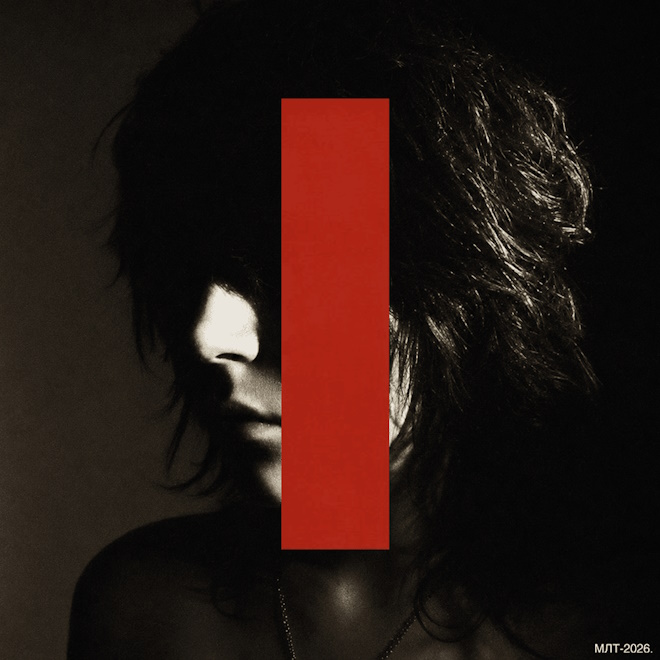

Мрачные треды
Новое имя: Темный Принц «Мрачные треды»
Представитель саундклауд-сцены, у которого есть совместные треки с Madk1d и Fortuna 812.
Темный Принц представляет новую саундклауд-сцену. Вы могли слышать его совместный с Madk1d трек «Ты че обиделась». Есть у артиста и работа с другим выходцем из саундклауда Fortuna 812.
«Мрачные треды» стали дебютным альбомом Темного Принца. На пластинке восемь треков, в том числе совместные работы с Silver Gloria и Ashleyrossmith, альтер-эго самого исполнителя.
Каждая композиция напоминает отдельную мрачную историю, случайно найденную в одном из уголков интернета. В «Вклубе» звучит история о невзаимной любви, за которой можно наблюдать через чужие сторис. «Автозаправка» похожа на пугающую переписку со сталкером, которую кто-то выложил на форуме. А «Цветы» рассказывают о любовных чувствах, которые постепенно перестают казаться романтичными и приобретают тревожный оттенок.
«Мрачные треды» напоминают подборку сетевых страшилок, где за каждым треком скрывается новая история, а за романтическими признаниями может обнаружиться что-то пугающее. Темный Принц собирает знакомые образы из интернет-культуры и превращает их в музыкальные зарисовки, в которых меланхолия соседствует с хоррором.

Militantum
Темный Принц выпустил "Militantum" — альбом, в котором детективный нуар встречается с интернет-гротеском
В центре истории биполярный детектив, зомби и маньяк одновременно. Звучит как очередная безумная интернет-вселенная, и, пожалуй, именно так ее и стоит воспринимать.
Второй альбом Темного Принца "Militantum" интересен прежде всего своим звучанием и текстовыми находками. Артист экспериментирует с электроникой, альтернативным роком и мелодичными поп-мотивами, создавая плотную и местами почти кинематографичную атмосферу. В текстах тоже хватает интересных решений. Образы, метафоры и сюжетные детали складываются в самостоятельный мир, который хочется разглядывать и расшифровывать.
Правда, погружение в него дается непросто. Концепция альбома настолько гротескна, что временами начинает работать против самой музыки. Главный герой здесь биполярный детектив, зомби и маньяк в одном лице. Из-за нагромождения безумных образов происходящее сложно воспринимать всерьез, а следить за внутренней логикой истории еще сложнее. Впрочем, возможно, в этом и заключается часть замысла. "Militantum" не столько предлагает последовательный сюжет, сколько затягивает слушателя в пространство, где абсурд становится главным способом разговора с реальностью.
В этом есть и любопытный культурный контекст. Темный Принц молодой артист, выросший на интернет-культуре 2010-х, когда начинающие авторы активно придумывали собственные вселенные и населяли их мутировавшими персонажами, хоррор-образами и намеренно преувеличенными историями. В этой эстетике смешивались аниме, видеоигры, мемы, альтернативная музыка и всевозможный сетевой фольклор. "Militantum" во многом продолжает именно эту традицию. Здесь чувствуется не столько стремление рассказать стройную историю, сколько желание создать максимально странный и узнаваемый авторский мир.
Поэтому альбом одновременно отталкивает своей чрезмерностью и вызывает интерес. За чередой зомби, маньяков и прочих персонажей обнаруживается артист с собственным музыкальным почерком и живым воображением. Если не пытаться воспринимать "Militantum" как концептуальный роман, требующий внимательного следования за сюжетом, он оказывается куда более увлекательным.